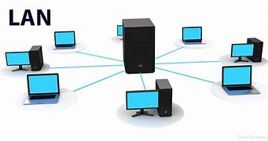
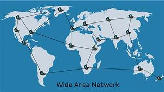

podría tener diferentes interpretaciones dependiendo del contexto, pero generalmente se refiere a una empresa o entidad especializada en la gestión y promoción de presencia en redes sociales.
Agencia
Arquitectura de red
Diseño y estructura planificada de un sistema de interconexión de dispositivos informáticos.

Autenticacion
Proceso mediante el cual se verifica la identidad de un usuario o entidad para garantizar que realmente sea quien dice ser.
Comunicacion
Se refiere al intercambio de información, ideas, sentimientos o mensajes entre individuos o grupos mediante el uso de medios verbales o no verbales.
Computador
Dispositivo electrónico diseñado para procesar, almacenar y manipular datos de acuerdo con instrucciones programadas.
Corporacion
Una corporación es una forma legal de organización empresarial que se caracteriza por tener una existencia jurídica separada de sus propietarios.
DNS
Protocolo de red utilizado para traducir nombres de dominio en direcciones IP numéricas.
Entretenimiento
Se refiere a actividades, eventos o medios destinados a divertir, entretener o proporcionar placer a las personas.
Informacion
Se refiere al conjunto de datos o hechos que se comunican para transmitir conocimiento, entender una situación o tomar decisiones.
LAN
Red de área local que conecta dispositivos informáticos en un área geográfica limitada.
Medio de transmicion
En el contexto de las redes de comunicación, se refiere al canal físico o medio a través del cual se envían los datos desde un emisor hacia un receptor.
Navegacion
Proceso de determinar y seguir una ruta para moverse de un lugar a otro.
Organizacion
Estructura compuesta por personas, recursos y procesos coordinados para alcanzar un objetivo común o realizar una actividad específica de manera eficiente y efectiva.
PSI
Proveedor de servicios de Internet.
Protocolo
Puede referirse a un conjunto de reglas o normas en diversos contextos.
Router
Dispositivo de red que actúa como un punto de conexión entre diferentes redes informáticas.
URL
Localizador uniforme de recursos.
WAN
Red de área amplia que conecta múltiples dispositivos y redes geográficamente dispersos.
Wifi
Tecnología de comunicación inalámbrica que permite la conexión a redes locales (LAN) y acceso a Internet a través de ondas de radio.